Kola kanda is a traditional Sri Lankan food. It is a kind of gruel (herbal soup or porridge) prepared with raw rice, coconut milk and the liquid with fresh juice of medicinally valued leaves. It is very popular among health conscious SriLankans as wholesome morning meal and remedy for some diseases.
Apart from the many health benefits of kola kanda, it brings a great cooling effect for the body. In Sri Lanka Kola kanda is well known as a healthy herbal porridge which is good to cool the body. Among Srilankans it is like a tradition to cook this herbal porridge whenever there is a need for cooling the body or whenever there is any allergy situation.
Price: Rs.220.00
Click on image....
Herbal Porridge
Herbal Porridge
Rs.100.00
Name: Herbal Porridge
Kola Kanda, or herbal porridge is one of the best healthy porridge from Sri Lanka that you must definitely try if you visit Sri Lanka one day. Kola kanda is full of nutrients and full of flavors.
Apart from the many health benefits of kola kanda, it brings a great cooling effect for the body. In Sri Lanka Kola kanda is well known as a healthy herbal porridge which is good to cool the body. Among Srilankans it is like a tradition to cook this herbal porridge whenever there is a need for cooling the body or whenever there is any allergy situation.
Price: Rs.100.00
Click on image....
Dehydrated jack fruit
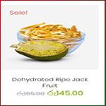
Dehydrated jack fruit
Rs.145.00
Name: Dehydrated jack fruit
Dehydrated Ripe Jack Fruit is a pure Srilankan product. There are no preservatives, colours or flavors added in the production. Raw foods are purchased from rural villages of southern province of Sri Lanka.
>> Satisfaction 100% Guaranteed
>> Pure Srilankan
>> No Flavors and Colours
Price: Rs.145.00
Click on image....
Organic Spicy Salsa
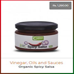
Organic Spicy Salsa
Rs.1290.00
Name: Organic Spicy Salsa
Create a healthy dish with this Organic salsa and enhance the taste to enjoy your food. Boosts the nutrient content adding flavor.
Price: Rs.1290.00
Click on image....
Chia Seeds
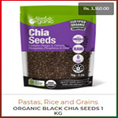
Chia Seeds
Rs.3350.00
Name: Chia Seeds
An ancient seed with more Omega 3, dietary fibre and protein than any other food from nature, Chia is nature’s complete superfood containing Omega 3 ALA, fibre and essential vitamins and minerals. Chia should be included in your diet – for overall health and well-being.
Chia is gluten free; promotes heart health; supports joint function and mobility and aids a healthy digestive system.
Chia is easy to include in your everyday diet as it tastes great. Sprinkle raw on food; such as breakfast cereals, salads and soups. Mix with water to form a thick gel and blend into smoothies and drinks. Add to bread and muffin recipes. Black and white seeds have the same nutritional values - it is up to you whether you would like to see it in your food!
Price: Rs.3350.00
Click on image....
Dehydrated Mango
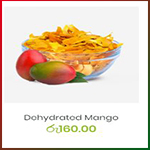
Dehydrated Mango
Rs.160.00
Name: Dehydrated Mango
Mangoes have been named the most widely consumed fruit in the world. They have a range of possible benefits.
>> Satisfaction 100% Guaranteed
>> Pure Srilankan
>> No Flavors and Colours
Price: Rs.160.00
Click on image....
Dehydrated Papaya
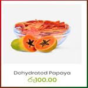
Dehydrated Papaya
Rs.100.00
Name: Dehydrated Papaya
Ceylon Good Food Dehydrated Papaya is come out as a ready to eat snack. It good as cereal trial too. Dehydrated in low temperatures. Pure taste, aroma, colour and nutrition is protected.
>> Pure Srilankan
>> No Flavors and Colours
Price: Rs.100.00
Click on image....
Dehydrated Pineapple
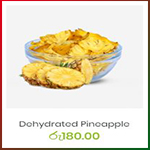
Dehydrated Pineapple
Rs.180.00
Name: Dehydrated Pineapple
The pineapple (Ananas comosus) is a tropical plant with an edible fruit, also called pineapples, and the most economically significant plant in the family Bromeliaceae.
>> Satisfaction 100% Guaranteed
>> Pure Srilankan
>> No Flavors and Colours
Price: Rs.180.00
Click on image....
Gotukola Herbal Porridge
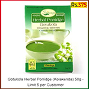
Gotukola Herbal Porridge
Rs.375.00
Name: Gotukola Herbal Porridge
"Gotukola" instant soup by Samaaya. For 3cups.
Afer opening a bag of powder, put the powder in the pan.
Pour water on it and heat it up. You can get good soup instantly.
Instant vegetable soup of Gotukola which is a traditional vegetable in Sri Lanka.
"Hathawariya" instant soup by Samaaya.
For 3cups. Afer opening a bag of powder, put the powder in the pan.
Pour water on it and heat it up. You can get good soup instantly.
Instant vegetable soup of Hathawariya which is a traditional vegetable in Sri Lanka.
"Karapincha(Curry Leaf)" instant soup by Samaaya.
For 3cups. Afer opening a bag of powder, put the powder in the pan.
Pour water on it and heat it up. You can get good soup instantly.
Instant vegetable soup of Karapincha which is a traditional vegetable in Sri Lanka.
Method of Preperation: Mix content of packet little by little in 450ml (3 cups) of water. Bring to a boil and keep on fire for 3 minutes while stirring continuously. Add salt and pepper to taste. Served hot.
Price: Rs.600.00
Click on image....
Cereal Porridge
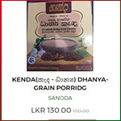
Cereal Porridge
Rs.130.00
Name: Cereal Porridge
Kurakkan Flour, Ragi Flour, Millet Flour, Sri Lanka, Annam, 1 Kg
Raagi is a kind of millet. It contains high proteins and has advantages of slow digestibility and high calcium content. High-protein biscuits are made with raagi
flour.The white grain varieties of raagi have more thiamine and protein. Raagi flour is used in the preparation of rotis , dosa , porridge, and other foods.Raagi flour is also known as Kurakkan flour in Karnataka, India. This ground raagi flour can also be consumed with Milk , boiled water or yogurt.Raagi flour recipe made peoples to keep active throughout the day if they take this at morning timings.
Price: Rs.130.00
Click on image....
Cereal Porridge
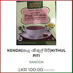
Cereal Porridge
Rs.100.00
Name: Cereal Porridge
Kithul flour (kithul piti), which is made out of tree trunks using a very specific and traditional process. These are high in fiber and an excellent food stimulator for everyone.Kithul flour has the ability to make your body cool and helps to get rid of problems like cracked feet, gastric ulcers, severe headaches & even reduce high blood pressure.
Price: Rs.100.00
Click on image....
Ranawara Tea
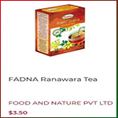
Ranawara Tea
Rs.650.00
Name: Ranawara Tea
Ingredients
1 cup of Dried Ranawara flowers
2-3 cups of Water
Pieces of juggery as a sweetener
Method:
Wash and clean dried Ranawara flowers. In a pot add water together with Ranawara flowers. Boil in low flame until the water boils and liquid gets dark in colour.
Serve this herbal tea as a hot drink with a piece of juggery.
Price: Rs.650.00
Click on image....
Jasmine Tea
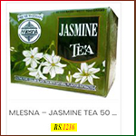
Jasmine Tea
Rs.1216.00
Name: Jasmine Tea
Natural jasmine extracts have been mix with this mellow Pure Ceylon tea .
Comes in the convenience of a tea bag, to make a refreshingly fun drink instantly.
Black tea in double chamber tea bags with individual foil sachet/envelope, from the high grown elevations of India, no additives. With its unique muscatel flavour and exquisite bouquet, Darjeeling tea is often referred to as the Champagne of Teas. This tea is lighter and less astringent than most black teas, but more layered and complex than most greens.
Ingredients : Black tea.
Net Weight : 2G×20 tea bags
Brand / Product name : Basilur Tea Export(PVT)LTD. / Darjeeling
Made in Sri Lanka
Price: Rs.1260.00
Click on image....
Curry Leaves
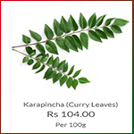
Curry Leaves
Rs.104.00
Name: Curry Leaves
NOTABLE FACTS
It is a tropical to sub-tropical tree which is native to India and Sri Lanka. The aromatic leaves are pinnate, with 11–21 leaflets. Curry leaf plants are a component of the Indian seasoning called curry. Curry seasoning is a compilation
AYURVEDA & MEDICINAL USES
Used in Ayurvedic medicine as a treatment for Effective against, Diarrhea, Indigestion Peptic ulcers, Dysentery Diabetes
TRY-ME RECIPES
The leaves are used fresh off of the tree and mostly used as a seasoning in curries.
Karapincha sambol Wash the fresh curry leaves and grind into a paste along with green chilies and a pinch of salt. Add chopped onions.
Price: Rs.104.00
Click on image....
Coriander Leaves
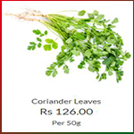
Coriander Leaves
Rs.126.00
Name: Coriander Leaves
NOTABLE FACTS
Coriander is an annual herb
in the family Apiaceae.The leaves are variable in shape, broadly lobed at the base of the plant, and slender and feathery higher on the flowering stems.Fresh leaves and the dried seeds are commonly used in cooking.
The leaves have a different taste from the seeds, with
citrus overtones..
AYURVEDA & MEDICINAL USES
Used in Ayurvedic medicine as a treatment for Effective against, Skin, inflammation, High cholesterol, Diarrhea, Mouth ulcers, Anemia Indigestion, Menstrual disorders
TRY-ME RECIPES
The leaves have an aromatic flavor. Can be consumed as raw or cooked. They are mostly used as a flavoring in salads,soups
Coriander Leaves Chutney
Wash the fresh coriander leaves and add chillies, tamarind and salt. Then grind
to a paste. No need to add water.
Price: Rs.126.00
Click on image....
Sesslle Joyweed
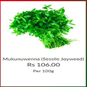
Sesslle Joyweed
Rs.106.00
Name: Sesslle Joyweed
NOTABLE FACTS
The plant grows wild, but is also cultivated for food, herbal medicines, as an ornamental plant , in the aquarium trade and as poultry feed.
AYURVEDA & MEDICINAL USES
Used in Ayurvedic medicine as a treatment for Mukunewenna helps treat stomach disorders, diarrhoea, dysentry and can also act as a natural plaster for diseased or wounded skin.
TRY-ME RECIPES
The leaves and stems of mukunuwenna are eaten as a cooked vegetable.
MUKUNUWENNA MALLUNG: Shred finely and stir fried with grated coconut and spices, to be eaten with rice.
Price: Rs.106.00
Click on image....
Fresh Boost
Fresh Boost
Rs.5000.00
Name: Fresh Boost
Your box consists of the following products - Serves a family of 4 for a week.... 10 varieties of vegetables - A mix of both up and low country ( Total average weight - 4 Kg), 4 varieties of Fruits - (Total average weight - 3.5 Kg), 3 varieties of greens - (Total average weight - 300 g), 2 varieties of Spices - (Total average weight - 100 g), 2 varieties of Heirloom Rice - (Total average weight - 1.5 Kg), 1 Bottle of virgin coconut oil - 375 ml, 5 Nuts of coconuts
Price: Rs.5000.00
Click on image....
Fresh Supreme
Fresh Supreme
Rs.10000.00
Name: Fresh Supreme
Your box consists of the following products - Serves a family of 5 for a week ....
12 varieties of vegetables - A mix of both up and low country (Total average weight - 4.5 Kg),
5 varieties of Fruits - (Total average weight - 4 Kg),
6 varieties of greens and herbs - (Total average weight - 600 g),
1 Traditional Pickle - (Total average weight - 250 g),
3 Packs of Heirloom Rice - (Total average weight - 2.3 Kg),
3 varieties of Spices -(Total average weight - 150 g),
1 bottle of virgin coconut oil - 375 ml,
5 nuts of coconuts